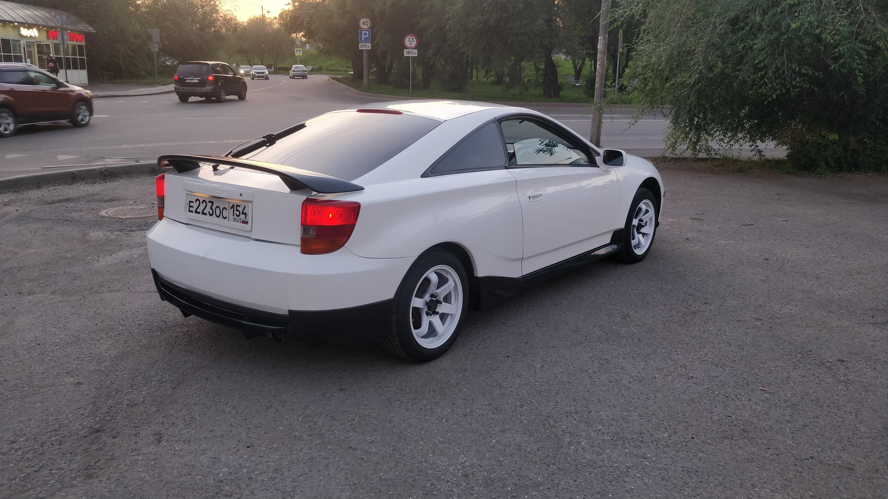
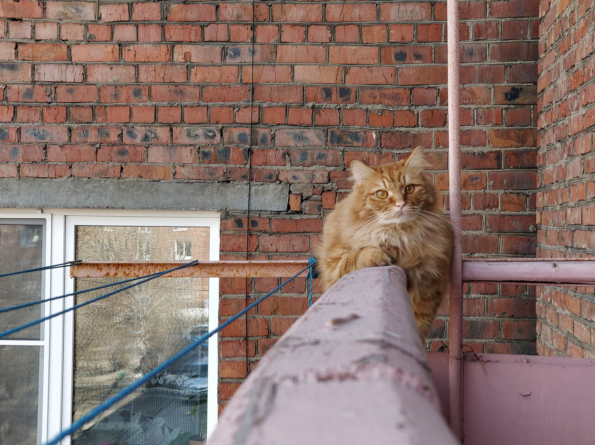

Привет! Это моя первая веб-страничка
Про меня
Меня зовут Игорь. Я учусь на курсе fullstack веб-разрабочик на python
Я живу в Иркутске. Люблю свою девушку и свою машину.
Моя рисовая ракета

А это мой кот
Кексик
Любимые цитаты:
Превосходство — это когда есть на что насрать, и есть чем.
©Джейсон Стетхэм.
Лучше быть последним — первым, чем первым — последним.
©Одинокий волк
Если волк молчит то лучше его не перебивай.
©Другой одинокий волк